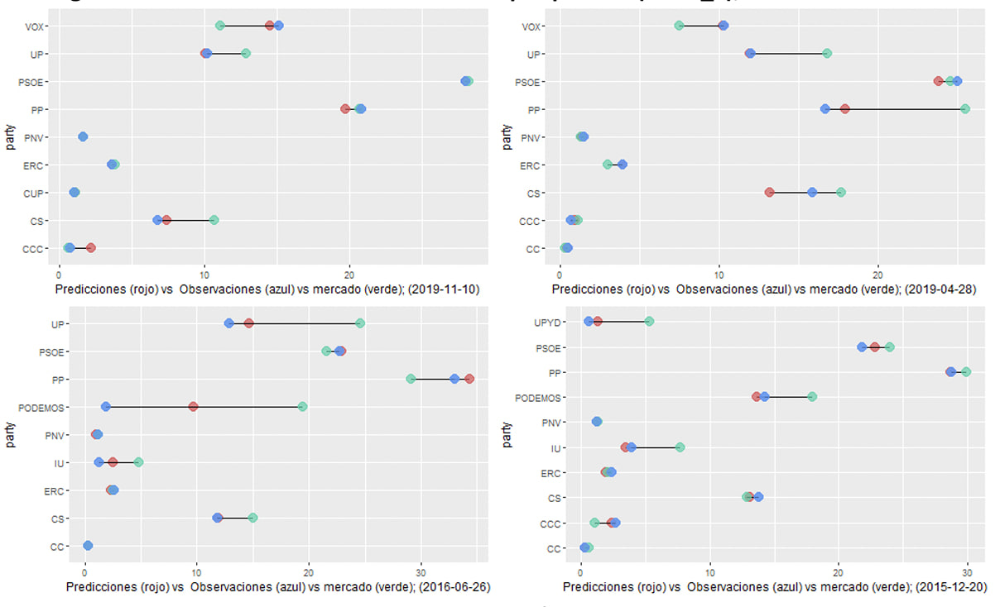

Predicción del voto electoral en España
Contexto, objetivos y antecedentes
Incertidumbre electoral
Contexto
- El clima político español lleva experimentando grandes cambios sistemáticos desde 2008, pasando de un sistema prácticamente bipartidista a un sistema donde prima la estrategia de pactos multipartidista.
- En épocas de crisis, como la pandemia de COVID-19 o las repeticiones electorales de 2019, la expectación por los resultados electorales es máxima.
- Sin embargo, a pesar de contar con cada vez más casas demoscópicas y agregadores («food chain feeding demand»), se ha extendido la idea de que las encuestas electorales no funcionan y que no sirven para predecir el voto.
Objetivos
Objetivo 1: estudiar errores sistemáticos
Automatizar un proceso de extracción, transformación y carga del histórico de datos electorales así como de las proyección demoscópicas de las casas encuestadoras en España a nivel nacional.
Objetivo 2: analizar sesgos sistemáticos (house effects)
Analizar la desviación sistemática de las casas encuestadoras, 1 desagregado por casa encuestadora, partido, bloque ideológico y cita electoral, entre otras variables.
Objetivo 3: predecir con Machine Learning
Se aplicarán distintos algoritmos predictivos de Machine Learning para mejorar tanto las predicciones de las casas encuestadoras como los promedios de agregadores electorales (Kiko Llaneras, TheElectoralReport 2, etc)
Antecedentes
- Pocos son los/as autores/as que han aplicado técnicas de Machine Learning 1 para la predicción de resultados electorales (al menos cuya metodología sea pública y transparente).
- En la mayoría de casos dichas predicciones son hechas por medios de comunicación, institutos demoscópicos, partidos electorales o agregadores (TheElectoralReport o FiveThirtyEight 2 3).
Antecedentes
- Recientemente ha llegado a España los conocidos como mercados de predicción 1: una especie de mercado de apuestas en los que se predice la intención de voto en función del consenso de los apostantes.
- Algunos autores proponen algunas alternativas a las encuestas para proporcionar a los partidos una estimación de su intención de voto basado en el análisis de reputación de sus candidatos 2, como predictores correlados de dicha intención de voto.
Antecedentes
- También se han usado recientemente el método Network scale-up (Network scale-up method, NSUM) 1 2 para la estimación de intención de voto, haciendo uso de preguntas indirectas para la estimación del tamaño de una subpoblación de votantes 3
Software empleado y fuentes de datos
Software empleado
Para la recolección y depuración de los datos hemos usado tanto R como SQL.
Para el análisis exploratorio, visualización y modelización hemos usado R
Todo el código se encuentra libremente disponible en Github en https://github.com/3nriket/TFM_encuestas_y_elecciones_EPP_UCM_2023


Fuentes de datos
Se han usado fundamentalmente 3 tipos de bases de datos
- Proyecciones demoscópicas. Se automatizará la recopilación de datos agregados de encuestas a nivel nacional.
- Resultados electorales. Se extraerán datos electorales (censo, porcentaje de voto, etc) provenientes del Ministerio del Interior.
- Variables externas socioeconómicas. Se extraerán variables socioeconómicas provenientes del INE, CIS, etc
La idea principal del trabajo es que una encuesta, en un instante temporal, falla, pero la evolución del conjunto de las mismas nos puede servir para realizar predicciones certeras.
Metodología: extracción y depuración
Variable objetivo
¿Cuál es la variable objetivo?
- Denotaremos como \(\hat{V}_{ij}(t)\) la predicción de porcentaje de voto de una casa encuestadora \(s_i\), para un partido \(p_j\), en un instante temporal \(t\) previo a las elecciones.
- Denotaremos como \(V_{j}\) el porcentaje de voto real obtenido el día de las elecciones.
Por cada casa encuestadora \(s_i\) y partido \(p_j\), en un instante temporal \(t\), anterior a las elecciones, tenemos entonces que
\[V_{j} = \hat{V}_{ij}(t) + \varepsilon_{ij}(t), \quad i=1,\ldots,E, \quad j=1,\ldots, P\]
Variable objetivo
\[V_{j} = \hat{V}_{ij}(t) + \varepsilon_{ij}(t), \quad i=1,\ldots,E, \quad j=1,\ldots, P\]
En contraste con uno de los paradigmas principales del Machine Learning, en nuestro problema de medidas repetidas, con un mismo valor de la variable objetivo \(V_j\) para una muestra de predictoras \(V_{j} = \hat{V}_{ij}(t)\)
El objetivo de este trabajo es ser capaces de, en un instante de tiempo \(t\) estimar los errores cometidos por cada encuestadora \(\hat{\varepsilon}_{ij}(t)\), para cada partido, de manera que la estimación agregada final sea el resultado del promedio de sus predicciones, tras corregirlas por los errores estimados cometidos
\[\hat{V}_{j} = \frac{1}{E} \sum_{i=1}^{E} \left( \hat{V}_{ij}(t) + \hat{\varepsilon}_{ij}(t) \right), \quad j=1,\ldots, P\]
Depuración: encuestas
Los datos agregados de las encuestadoras proceden de bases de datos abiertas como la Wikipedia
El objetivo será predecir el porcentaje de voto real (primera fila de la tabla), por los principales partidos políticos (rectángulo discontinuo azul), en las distintas carreras electorales desde 1982 hasta la actualidad, haciendo uso de la estimación de voto de cada casa (matriz de valores del recuadro verde).
Depuración: encuestas
La automatización en la extracción contó con los siguientes pasos:
Generación de una base de datos de links en los que realizar la búsqueda de resultados mediante el uso con expresiones regulares para las distintas elecciones desde 1982.
Acceso al código html para extraer de los png de los logos los nombres de los partidos políticos
Depuración: encuestas
Una vez construida la base de (meta)datos, se accedió al código html de cada una de ellas para extraer los datos de cada una de las tablas. Estos son algunos de los pasos adoptados en la depuración
- Recodificar el nombre de los partidos y casas encuestadoras.
- Cálcular el número de días de trabajo de campo de cada encuesta y los días que quedan para la celebración de las elecciones.
- Descartar encuestas sin tamaño muestral o con menos de 1 día de trabajo de campo, así como encuestas realizadas por partidos.
- Dado que el primer objetivo será rankear el binomio casa encuestadora - partido, se procedió a descartar casas poco frecuentes (<1%) cuya precisión no podemos calibrar.
Depuración: encuestas
La tabla (tidy data) resultante se aproxima a las 12 000 observaciones (porcentaje de voto que una encuestadora estima, para cada partido, fecha de campo y carrera electoral), identificando de manera unívoca cada encuesta (casa encuestadora + fechas de campo)
Depuración: elecciones
Los datos relativos a resultados electorales se han obtenido a través del portal Infoelectoral del Ministerio del Interior, a través del proyecto de paquete de R {pollspain}, que tenemos actualmente en desarrollo.
En esta fuente, los datos se encuentran desagregados por distritos electorales, que para esta tentativa preliminar hemos decidido agregarlos a nivel nacional, para cada partido y carrera electorales, tanto el porcentaje de voto como variables que cuantifique el censo, la participación, votos blancos y votos nulos.
Se ha tenido que realizar un arduo trabajo de normalización de los partidos
Depuración: elecciones
Con los datos de casas encuestadores y los resultados reales, podremos construir tanto el promedio/consenso de mercado (encuestas ponderadas por su tamaño muestral y ventana temporal) como el análisis de las desviaciones respecto a la realidad
Depuración: exógenas
¿Por qué incluir variables exógenas?
Aunque considerar en modelos de predicción electoral solo variables exógenas puede incorporar excesivo ruido y tener un bajo poder predictivo, no incorporarlas puede ocasionar un incremento del sesgo y variabilidad del error al modelo, especialmente si las encuestadoras han fallado o no han sido correctamente seleccionadas
Nate Silver 1 cuantificó en un 30% la variabilidad explicada por las condiciones económicas en las elecciones americanas de 2020.
Depuración: exógenas
Por ello hemos recopilado variables exógenas desde 1980, agrupadas en los siguientes bloques temáticos:
- Medio ambiente: generación y consumo eléctrico, emisiones de CO2, reservas de petróleo, etc. Según las encuestas de IPSOS «en España, del 74% al 88% de los potenciales electores estaría considerando votar a un partido que reduzca la factura energética e impulse la transición energética» 1
- Demografía y sociedad: esperanza de vida, casos de violencia machista, etc. De acuerdo con el informe de IPSOS 2, la justicia social es una preocupación emergente entre los votantes en España.
Depuración: exógenas
Por ello hemos recopilado variables exógenas desde 1980, agrupadas en los siguientes bloques temáticos:
- Economía: inflación, IPC, etc. Dicha inclusión está basada en los postulados de Fearon (1998), Kuklinski y West (1981) y Lewis-Beck y Skalaban (1989), como se ilustra en Jaime-Castillo et al. (2014) 1, que indicaban que el voto económico es un instrumento para seleccionar al que el individuo considera el mejor de los candidatos de la carrera (aunque no por una mayoría de ciudadanos).
- Política y Gobierno: gestión del gobierno, presupuestos generales del estado, etc.
En este trabajo hemos incorporado finalmente 31 indicadores a nivel nacional.
Metodología: análisis de errores
House effects
La hipótesis principal del trabajo no es (de momento) desarrollar el mejor método de predicción en el contexto de Machine Learning, sino ilustrar como, con métodos ya conocidos, se puede obtener un buen resultado predictivo entendiendo los sesgos sistemáticos de las casas encuestadoras.
El simple promedio ponderado de encuestas de los medios de comunicación y agregadores solo nos ofrece una fotografía del estado de la precisión de las casas encuestadoras, pero no permite ofrecer precisión a partir de cierto umbral
El objetivo del trabajo es chequear como con técnicas de Machine Learning, el consenso de los errores puede ayudarnos a una predicción precisa.
House effects
Sea \(\hat{V}_{ij}(t)\) la predicción de intención de voto de cada casa encuestadora \(s_i\) y para cada partido \(p_j\), en un instante temporal \(t\), y sea \(\varepsilon_{ij}(t)\) el error real que están cometiendo (cuando \(t\) es la cita electoral) y \(V_{j}\) el resultado real para cada partido, tal que
\[\varepsilon_{ij}(t) = V_{j} - \hat{V}_{ij}(t) , \quad i=1,\ldots,E, \quad j=1,\ldots, P\]
Llamaremos house effect, denotado como \(HE_{ij}\) al sesgo sistemático (a lo largo del tiempo \([t_0, t_1]\)) de una casa encuestadora respecto al promedio de un partido o bloque ideológico, definido como
\[HE_{ij}(t_0, t_1) = \frac{1}{\left| T \right|}\sum_{t \in T} \left| \hat{V}_{ij}(t) - \frac{1}{\left| T \right|}\sum_{t \in T} \omega_{i,j} \hat{V}_{ij}(t)\right|\]
House effects y promedios
Para analizar dichas desviaciones se han definido diferentes promedios, todos ellos ponderados por tamaño de la encuesta y ventana temporal (encuestas con mayor muestra y más recientes tendrán más peso)
- Promedio general partido: promedio ponderado de todas las estimaciones de voto, de todas las casas, para un determinado partido, en un rango temporal.
- Promedio general ideológico: promedio ponderado de todas las estimaciones de voto, de todas las casas, para un determinado bloque ideológico, en un rango temporal.
- Promedio casa partido: promedio ponderado de todas las estimaciones de voto, para un determinado partido y casa encuestadora.
- Promedio casa ideológico: promedio ponderado de todas las estimaciones de voto, para un determinado bloque ideológico y casa encuestadora.
House effects y promedios
Así el house effect puede ser definido como la infraestimación o sobreestimación de una casa encuestadora respecto a un partido/bloque respecto al promedio ponderado correspondiente, para un periodo de tiempo dado para cada cita electoral.
Ejemplo: para las últimas elecciones de 2019 se refleja un sesgo sistemático favorable al PP y/o ala derecha de encuestadoras como Gesop. Por otro lado, el CIS tuvo un sesgo sistemático en favor de PSOE y al ala izquierda.
House effects y promedios
Los puntos de colores son las estimaciones de cada encuesta; los puntos con contorno negro representan el promedio de la casa; la barra representa el promedio de mercado; y la línea horizontal equivale al voto observado.
Estos sesgos no solo no los consideramos perjudiciales para nuestros modelos sino que, si son continuados en el tiempo, la hipótesis es que servirán a nuestros modelos como un “recuerdo de estimación”.
Metodología: técnicas Machine Learning
Train-validación-test
En el trabajo se excluyeron las recientes elecciones de 2023. De las 11 036 restantes se decidió particionar como sigue
- Entrenamiento (train): 80% de los datos
- Validación: validación cruzada con \(k = 4\) folds y 100 repeticiones.
- Test: 20% de los datos
La métrica o bondad de ajuste a evaluar será el error medio absoluto (MAE) (más adecuado para modelos que tengan bajo error de predicción pero con valores extremos e inestables en los errores)
Competidores
Referencia: por tener una referencia, el error absoluto medio de los promedios de encuestas en España ronda los dos puntos por partido
Missing y outliers
Aunque algunos modelos son robustos frente a outliers y ausentes, con el objetivo de ganar interpretabilidad y armonía entre los modelos construido, se decidido imputar estos datos. Para ello se comparó dos metodologías:
Imputación por estadísticos de localización
Imputación por bagging
El MAE conseguido en los modelos con variables imputadas por estadísticos es ligeramente peor que el de los modelos con imputación por Bagging, siendo respectivamente de 1.2 y 0.9.
Modelos de predicción
- Árboles: usaremos árboles de regresión para predecir nuestro error continuo.
- Método de división: usamos F de Snedecor (ANOVA), que toma la división que varie más la media de la variable dependiente.
- cp: parámetro de poda
- minbucket: número de observaciones mínimas en cada nodo final (desde un 1% (70) hasta un 20%).
- maxsurrogate: el árbol no usa todas las variables, va seleccionando las mejores (método de selección embedded).
Modelos de predicción
Modelos de predicción
Modelos de predicción
c a fin de superar las limitaciones de los árboles, usaremos modelos con el mismo concepto base y con el método de Ensamblado (combinando múltiples modelos en uno nuevo). En el caso del Baggin se han seleccionado \(n<N\) observaciones con reemplazamiento (o sin) de los datos originales y se aplica un árbol.
- Random Forest: incorporar la aleatoriedad en las variables utilizadas para segmentar cada nodo del árbol. El proceso es prácticamente igual, pero a diferencia del que se hace en Bagging, cada vez que se abre un nodo seleccionaremos \(p\) (\(p = 129\)) variables de las \(k\) originales y de esas \(p\) elegidas se escoge la mejor para llevar a cabo la partición en ese nodo.
Modelos de predicción
Modelos de predicción
Modelos de predicción
- Gradient Boosting: formados por un conjunto de árboles de decisión, entrenados de forma secuencial, de forma que cada nuevo árbol trata de mejorar los errores de los árboles anteriores, modificando las predicciones en la dirección de decrecimiento dada por el negativo del gradiente de la función de error (con Early Stopping para evitar el sobreajuste y marcar así un número de iteraciones de parada).
- Shrinkage (\(λ\)) o “learning rate”: representa el ritmo de aprendizaje y cuanto menor sea, más interaciones se necesitan. En nuestro caso varía desde 0.001 (valor por defecto) hasta 1.
Modelos de predicción
Modelos de predicción
Modelos de predicción
- Redes Neuronales: a fin de complementar los inconvenientes de los filtros o rankear variables, aquí se recurrió a wrappers como técnica de selección de variables (métodos de búsqueda secuencial que bucean entre distintas combinaciones de variables)
- Modelos SVM con kernels lineales y polinomiales de grado 2 y 3.
Modelos de predicción
Modelos de predicción
Modelos de predicción
Conclusiones y líneas abiertas
¿Qué hemos conseguido? ¿Qué nos falta?
Conclusiones
- Se ha creado una automatización para la recopilación tanto de encuestas como de datos electorales en nuestro país.
- Se ha comprobado que el hecho de que las casas encuestadoras cometan sesgos sistemáticos puede ser incluso beneficioso en la predicción, alimentando a los modelos con diferentes de variables que les permita capturar algo similar a un «recuerdo de estimación».
- Se ha desarrollado una metodología propia (y aún así preliminar) para predecir la intención de voto, alcanzando en el mejor de los casos un error medio absoluto (MAE) de 0.21, frente a la mejor casa encuestadora (GAD3 con un MAE de 1.9) o al promedio de ellas (2.2 de MAE)
- Vimos que los datos de encuestas y promedios son los bloques de variables que más información aportan y los más seleccionados entre nuestros modelos.
Líneas abiertas futuras
🟥 Debilidad: dificultad para la predicción de partidos nuevos sin información sobre el sesgo de las encuestas
✅ Futura solución: mejorar en la creación de predictoras que permitan a los modelos captar un «recuerdo de voto»: de partidos nuevos por bloques y regiones, así como crear modelos para estimar matrices de transferencia de voto
Líneas abiertas futuras
🟥 Debilidad: todavía no incluye variables sociológicas.
✅ Futura solución: incorporar a los modelos variables sociológicas extraídas de los microdatos del CIS (como preocupaciones de los españoles)
Líneas abiertas futuras
🟥 Debilidad: solo considera datos agregados de encuestas.
✅ Futura solución: automatizar la recopilación de encuestas a nivel autonómico para posteriormente agregarlas en un modelo nacional
Líneas abiertas futuras
🟥 Debilidad: ganar en voto no implicar ganar en poder

✅ Futura solución: desarrollar modelos de simulación de asignación de escaños (en función de cada sistema electoral) en función de los datos desagregados por comunidades.
Otras ideas: extenderlo a otros sistemas electorales, incluir dependencia entre regiones, etc. Todo ello está siendo estudiado para su posterior implementación en un paquete de R, en colaboración con la sección de datos de RTVE.
¡Gracias!
✉️ Mail: javalv09@ucm.es (Facultad de Estadística de la UCM)
Agradecimientos: «Dinámica compleja e inferencia no parámetrica», proyecto subvencionado por la Agencia Estatal de Investigación (AEI) del Ministerio de Ciencia e Innovación (PID2020-116587GB-I00)
Diapositivas creadas integramente con Quarto en RStudio
Javier Álvarez Liébana • SEIO 2023 (Elche) • Fac. Estadística (UCM)